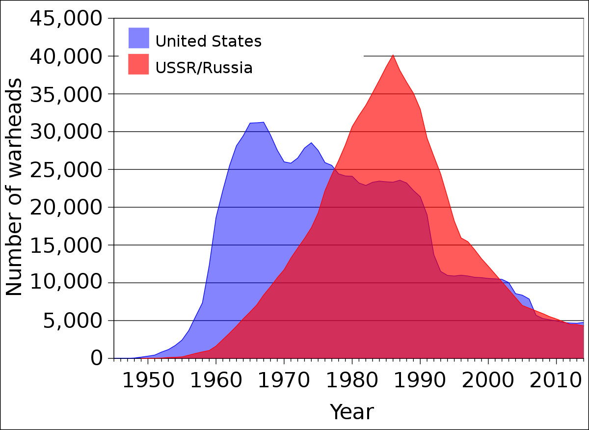

Background History

Although the United States (US) and the Union of Soviet Socialist Republics (USSR) fought alongside each other in World War II (WW2), their relationship was tense given the ideological differences. In 1945, the US's development and usage of atomic bombs helped WW2 come to an end, so American officials encouraged the continued research and development of atomic bombs, thus sparking an arms race. In 1949, the Soviet Union tested its first atomic bomb. As a response, President Truman would build even more destructive weapons, such as hydrogen bombs. Similarly, Stalin followed suit.
This graph illustrates the nuclear stockpiles of the US and the USSR/Russian Federation from 1945 until 2015. The reduction in nuclear stockpiles is a direct result of negotiations and agreements between the two nations.